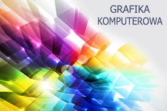
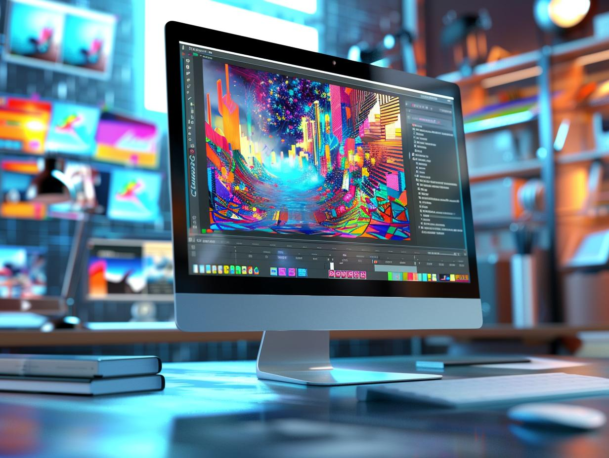

Grafika Komputerowa
Grafika komputerowa-Grafika komputerowa to dziedzina zajmująca się tworzeniem, edytowaniem i przetwarzaniem obrazów przy użyciu komputerów. Obejmuje zarówno grafikę 2D, jak i 3D, wykorzystywaną w filmach, grach, projektowaniu, animacjach oraz wizualizacjach. Dzięki niej możliwe jest tworzenie realistycznych wizualizacji, animacji czy interaktywnych elementów w przestrzeni cyfrowej.
 

-Grafika rastrowa – Obrazy składające się z pikseli, jak zdjęcia cyfrowe. Przykładowe formaty: JPG, PNG, GIF. -Grafika wektorowa – Obrazy tworzone za pomocą matematycznych równań, które opisują kształty, linie i kolory. Przykładowe formaty: SVG, EPS, AI. -Grafika 3D – Obrazy i animacje trójwymiarowe, które odwzorowują rzeczywistość w przestrzeni 3D. Używane m.in. w filmach, grach komputerowych, architekturze i symulacjach.
-Silniki graficzne: Oprogramowanie wykorzystywane do generowania grafiki 3D w czasie rzeczywistym, np. w grach komputerowych. Przykłady to Unity czy Unreal Engine.
-Animacja komputerowa: Technika tworzenia ruchomych obrazów poprzez szybkie wyświetlanie kolejnych klatek. Może obejmować zarówno animacje 2D, jak i 3D, a także wykorzystanie efektów specjalnych.
-Przetwarzanie obrazu: Dział grafiki komputerowej zajmujący się manipulowaniem obrazami (np. zmiana rozmiaru, filtracja, rozpoznawanie kształtów). Szeroko stosowane w fotografii cyfrowej, medycynie czy bezpieczeństwie.